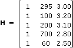
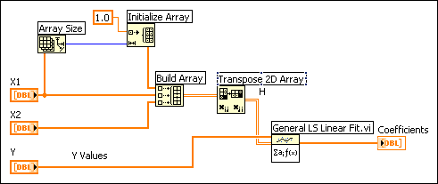
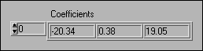

Suppose you want to estimate the total cost (in dollars) of a production of baked scones, using the quantity produced, X1, and the price of one pound of flour, X2. To keep things simple, the following five data points form this sample data table.
| Cost (dollars) Y | Quantity X1 | Flour Price X2 |
|---|---|---|
| 150 | 295 | 3.00 |
| 75 | 100 | 3.20 |
| 120 | 200 | 3.10 |
| 300 | 700 | 2.80 |
| 50 | 60 | 2.50 |
You want to estimate the coefficients to the equation:
y = b0 + b1X1 + b2X2
The only parameters that you need to build are H (observation matrix) and Y Values. Each column of H is the observed data for each independent variable: the first column is one because the coefficient b0 is not associated with any independent variable. H should be filled in as:

In LabVIEW, the observed data would normally appear in three arrays (Y, X1, and X2). The following block diagram demonstrates how to build H using the General Linear Fit VI.

After running the General Linear Fit VI, the following Coefficients are obtained.

Therefore, the following equation is used to compute the total cost of scone production.
Y = –20.34 + 0.38X1 + 19.05X2